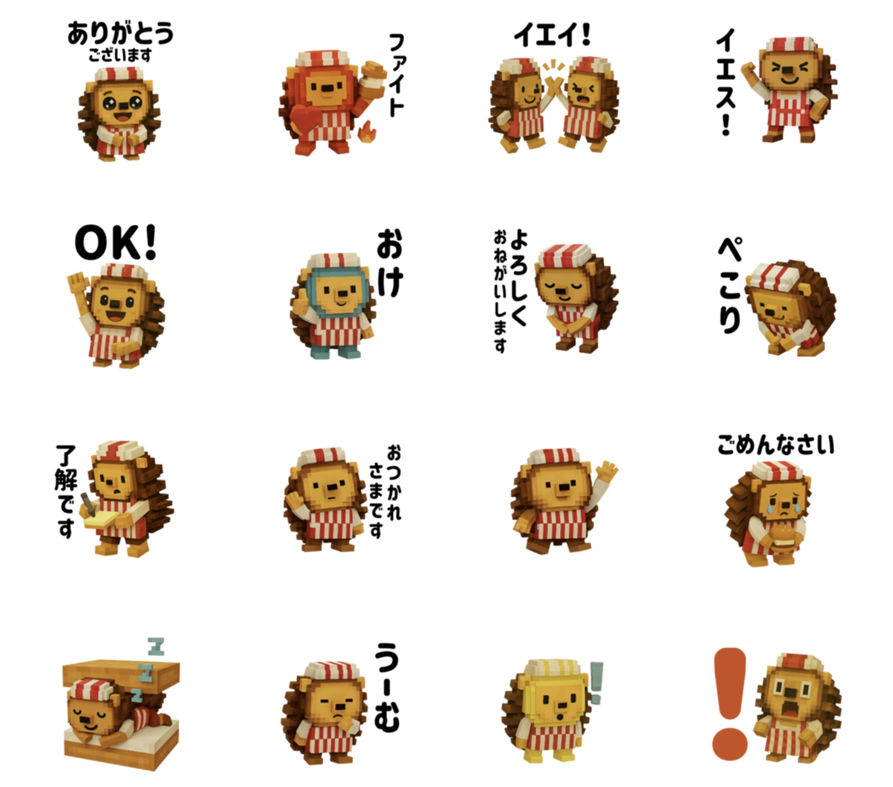
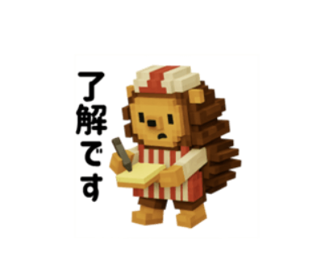
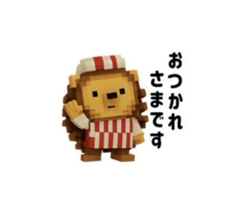
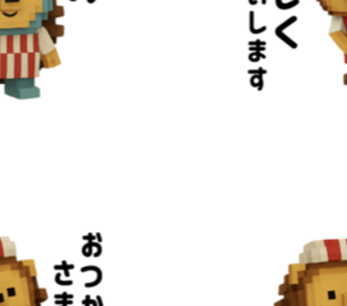
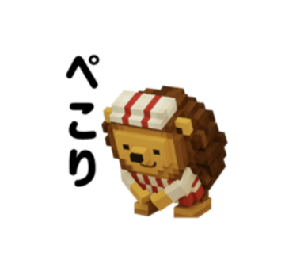

LINE STICKERS
何も喋らないハリチくんが、
トークでは、ちょっとだけ喋ります。
Instagramやクリチランドでは、黙々とクリチを焼いているハリチくん。LINEスタンプでは「ありがとうございます」「よろしくおねがいします」「了解です」——働き者らしい、ていねいなことばで気持ちを伝えてくれます。ボクセルのままのハリチくんが、毎日のトークにちいさな癒しを運びます。
トークに、ハリチくんが住みはじめる。
今日中にお願いします！
既読

無事終わりました〜！
既読

差し入れ、置いときました🍩
既読

敬語スタンプ多めなので、仕事のトークでもちゃんと使えます。
全16種、働き者のことば。
「ありがとうございます」「よろしくおねがいします」「了解です」「おつかれさまです」——ビジネスでも角が立たない敬語系から、「おけ」「ぺこり」「うーむ」のゆるふわ系まで。毎日のトークの、だいたいの場面はハリチくんに任せられます。
- ありがとうございます
- ファイト
- イエイ！
- イエス！
- OK!
- おけ
- よろしくおねがいします
- ぺこり
- 了解です
- おつかれさまです
- ごめんなさい
- うーむ
…ほか、ことばのいらないスタンプも入って全16種。

WHO IS HARICHI?
ハリチくんとは
クリチランドの工房で、毎日もくもくと #クリチ を作っている働き者のハリネズミ。赤白ストライプのエプロンと帽子がトレードマークです。Instagram（@harichi_kurichiland）では、何も喋らない日常が「じわじわくる」とじわり話題に。組み立て玩具『#HARICHI』や、3Dで会える「ハリチくんウォーク」も展開中です。
商品情報
- スタンプ名
- クリチ大好きハリチくん ver1
- クリエイター
- Vsw co.,ltd
- 種類
- 全16種
- 価格
- ¥190（LINE STORE表示価格）
- 販売場所
- LINE STORE／LINEアプリ内スタンプショップ